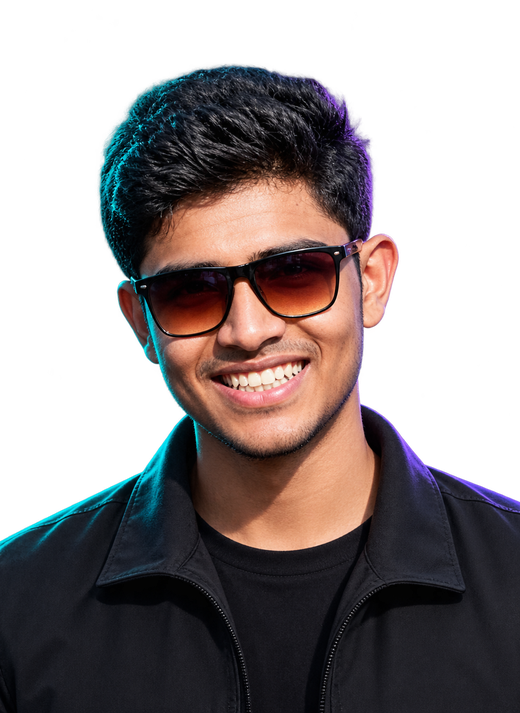

PRJ // 01
Live + Repo
MediaTrack
Hospital management dashboard for patient records, doctor scheduling, and appointment workflow with live PostgreSQL persistence.
Next.jsReactPostgreSQLAPI Routes
ECE grad | JavaScript, Python, Next.js | Ex-intern, Haldia Petrochemicals (networking) | Seeking entry-level IT, network & security roles.

I build practical web experiences, interactive 3D browser games, and embedded telemetry prototypes.
Through an Information Systems internship at Haldia Petrochemicals Limited, I gained foundational knowledge in computer networking, IPV4 addressing, routing, switching, DNS/DHCP, and basic troubleshooting.
I embrace a honest engineering philosophy: I describe my capabilities truthfully, whether it’s building full-stack dashboards with Next.js and PostgreSQL, crafting hardware capstones with ESP32 and AD8232 ECG sensors, or leveraging modern AI-assisted development tools to deliver clean, production-ready code.
Hospital management dashboard for patient records, doctor scheduling, and appointment workflow with live PostgreSQL persistence.
Responsive cinematic web experience featuring animated canvas particles and dynamic scene transitions across homecoming and brand-new day themes.
Full 3D browser runner with lane controls, jump mechanics, dynamic train obstacles, coin collection, and hoverboard mode.
Python Flask-backed slot game featuring adjustable bets and paylines, balance tracking, randomized spins, and winning-line evaluation.
Responsive brand-inspired landing page with interactive product flavor selection that transitions hero imagery and color themes.
An interactive beverage showcase featuring dynamic beverage selection, CSS layout transforms, and responsive typography.
A welcoming restaurant website where users explore categorized culinary offerings, dish details, and ordering highlights.
Final-year ECE capstone interfacing an AD8232 ECG sensor with an ESP32 microcontroller for real-time analog signal acquisition and live serial plotter waveform telemetry.
Available for entry-level IT support, network administration, cybersecurity, and web development roles. Feel free to reach out directly via email or view my verified repositories and deployed projects.